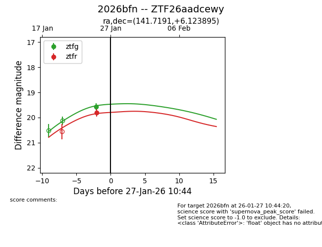
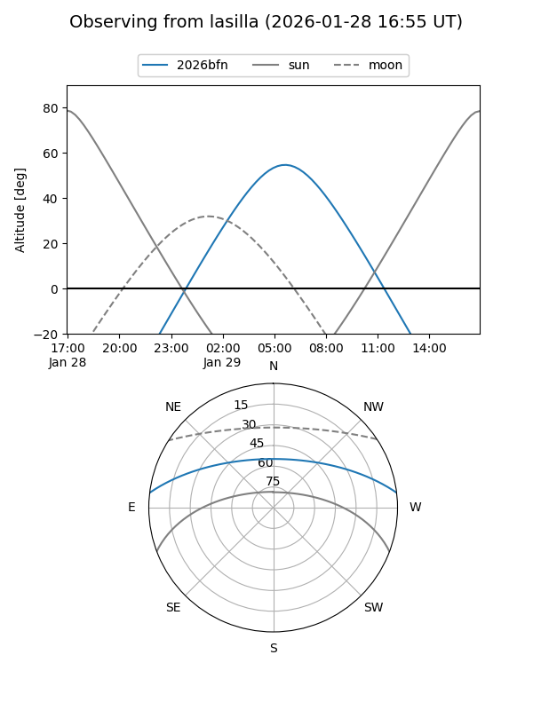
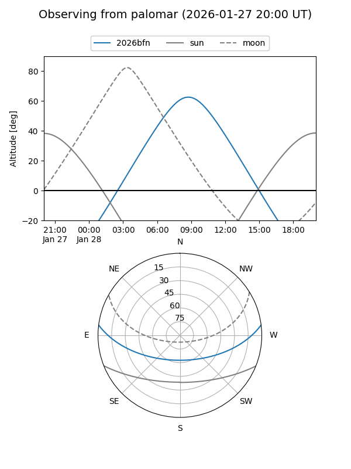
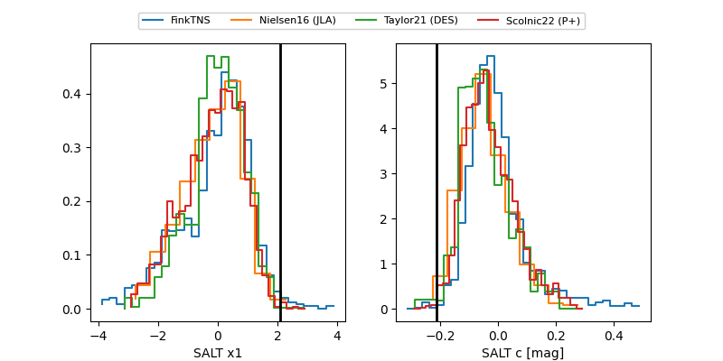

2026bfn
Target 2026bfn at 2026-01-27 17:21
Aliases and brokers:
FINK: link
Lasair: link
ALeRCE: link
TNS: link
YSE: link
alt names
ZTF26aadcewy (ztf,fink_ztf)
2026bfn (tns,yse)
Coordinates:
equatorial (ra, dec) = 141.7191,+6.12390
equatorial (HMS+DMS) = 09:26:52.58,+06:07:26.02
galactic (l, b) = (226.6861,+37.14604)
Flags:
Photometry:
last ztfg=19.56, ztfr=19.80
1 ztfg, 1 ztfr detections
Lightcurve

Visibility


Additional plots
